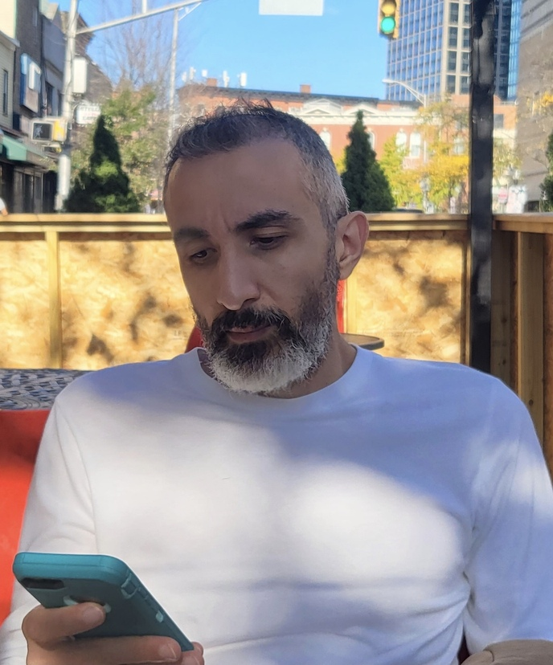

Amir Faraz

Summary
Hello, I’ve been trying to do Freelance Work for the past few years unsuccessfully. I needed to leave the office
work due to mental health and then the pandemic happened. I am now recovered and looking for fully remote work.
I have a variety of technical skills and I’m willing to learn and work in any industry.
Work Experience
Freelance Work
July 2019 to Dec 2023
- Created a Retail E-Commerce Shopify store that sells T-shirts, Mugs & Print-on-demand items
- Created an Amazon KDP store that sells coloring books for kids and adults
- Work with Facebook and Google ad campaigns
- Created YouTube channels (Music and Walking) - used YouTube Studio, Tube Buddy, VidIQ, Final Cut Pro
- Created an Etsy store that sells Digital Art - used Photoshop, Midjourney, After Effects, Final Cut Pro
Deskside Technician
Stefanini - New York, NY January 2017 to Jun 2019
- Responsible for setting up iPhones and iPads for internal users
- Creates the account for the user on Airwatch and Salesforce
- Troubleshoots and fixes any SIM card and device issues and Works on verizon/T-Mobile/AT&T/Rogers portal
Sales
Century 21 Department Store - Brooklyn, NY July 2016 to December 2016
- Customer Service Relations
- Product Placement and Adherence
- Suggestive Selling
- Visual Merchandising
Education
High School Diploma
Tehran, Iran
Languages
Skills
Final Cut Pro, Adobe Photoshop, Adobe After Effects, Adobe Premier Pro, Youtube Studio, Midjourney, ChatGPT,
Amazon KDP, Print On Demand, Airwatch, Salesforce,Curstomer Service
Contact Me